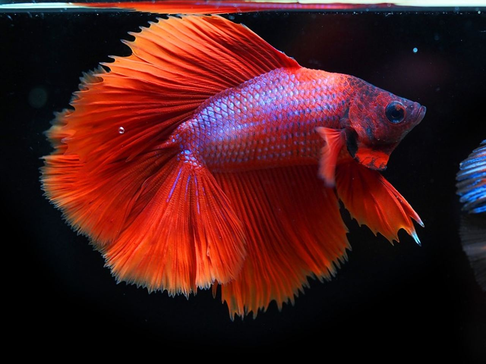
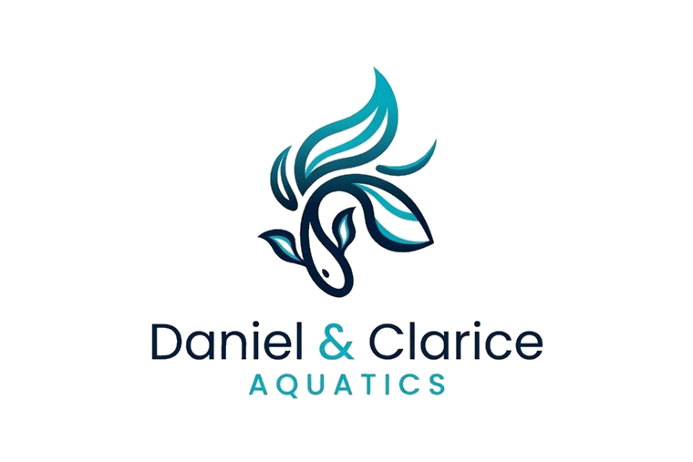
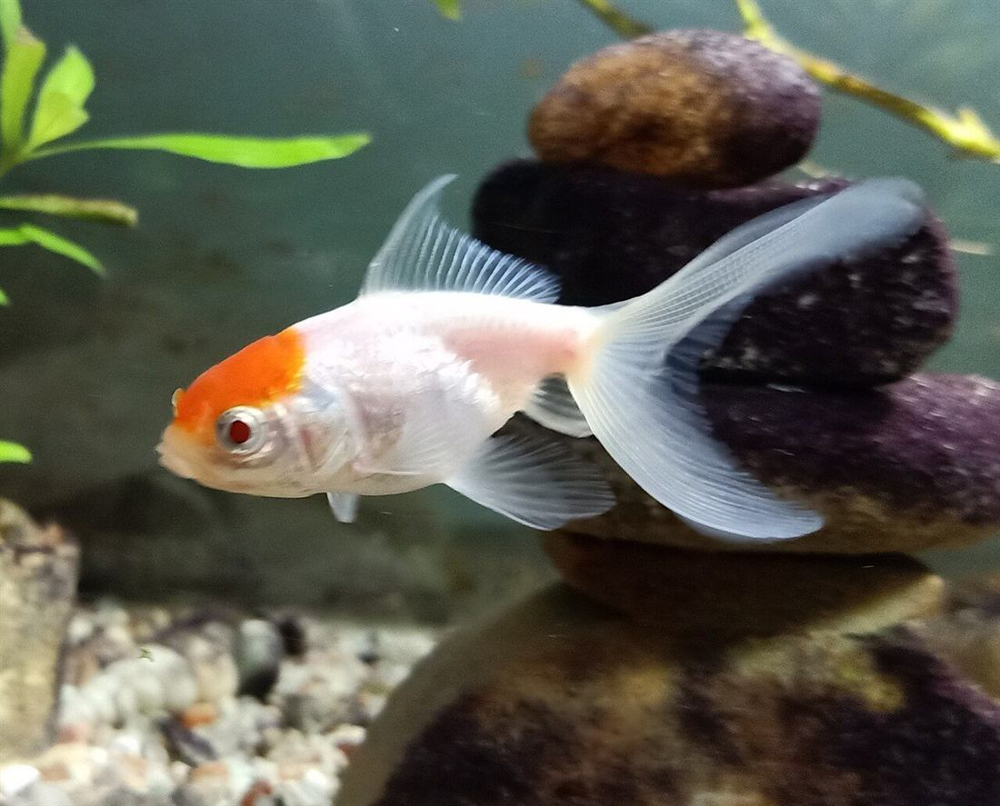

Betta macho vermelho
Cor intensa, nadadeiras abertas e presença forte no aquário.

Bettas, Guppies e Peixes Japoneses em Itaguaí/RJ
Peixes ornamentais criados com paixão e precisão, com retirada em Itaguaí e entrega para regiões próximas.
Sobre nós
A Daniel & Clarice Aquatics trabalha com peixes ornamentais criados com manejo responsável, observação diária e atenção à qualidade visual de cada exemplar. A proposta é oferecer animais saudáveis, bonitos e prontos para compor aquários delicados, elegantes e bem cuidados em Itaguaí, Campo Grande, Santa Cruz, Rio de Janeiro, Nova Iguaçu, Seropédica e proximidades.
Nossas espécies

Cor intensa, nadadeiras abertas e presença forte no aquário.

Cores vivas, movimento leve e ótima opção para aquários ornamentais.

Corpo claro, cabeça laranja e nado calmo para aquários maiores.
Catálogo
A disponibilidade pode variar conforme lote, sexo, cor e tamanho. Consulte antes de separar, retirar em Itaguaí ou combinar entrega na região.
Galeria
Como comprar
Chame no WhatsApp para confirmar Bettas, Guppies, Peixes Japoneses, cores e quantidade.
Fazemos entrega para Itaguaí, Campo Grande, Santa Cruz, Rio, Nova Iguaçu, Seropédica e bairros próximos conforme rota.
Você pode retirar no local ou solicitar retirada por Uber ou 99.
Endereço
Atendemos a partir de Itaguaí/RJ. Fazemos entrega na região e também retirada presencial. Se preferir, você pode combinar a separação e mandar retirar por Uber ou 99.
WhatsApp: (21) 97168-1663